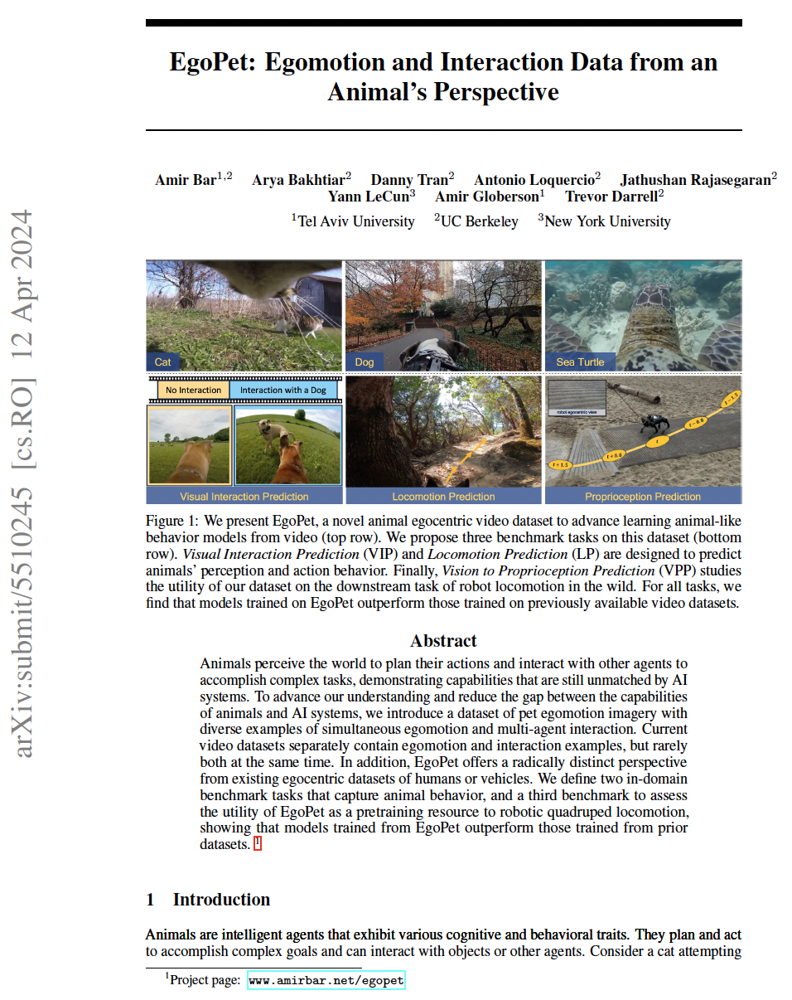

|
|
|
|
|
|
|
The EgoPet dataset is an extensive collection composed of 6,646 video segments distilled from 819 unique videos. High level statistics are provided in the figure below. These original videos were sourced predominantly from TikTok, accounting for 482 videos, while the remaining 338 were obtained from YouTube. The aggregate length of all video segments amounts to approximately 84 hours, which reflects a substantial volume of data for in-depth analysis. In terms of video duration, the segments exhibit an average span of 45.55 seconds, although the duration displays considerable variability, as indicated by the standard deviation of 192.19 seconds. This variation underscores the range of contexts captured within the dataset, from brief encounters to prolonged interactions.
To measure progress in modeling and learning from animals, we propose three new tasks that aim to capture perception and action: Visual Interaction Prediction (VIP), Locomotion Prediction (LP), and Vision to Proprioception Prediction (VPP). Together with these tasks, we provide annotated training and validation data used for downstream evaluation, and initial benchmark results.
The VIP task aims to detect and classify animal interactions and is inspired by human-object interaction tasks. We temporally annotated a subset of the EgoPet videos with the start and end times of visual interactions and the object of the interaction category. The categories, which include person, cat, and dog, were chosen based on how commonly they occurred as objects (for all the categories refer to Supplementary Material of the paper).
The goal of the LP task is to predict the future 4 second trajectory of the pet. This is useful for learning basic pet skills like avoiding obstacles or navigating. We extracted pseudo ground truth trajectories using Deep Patch Visual Odometry (DPVO), the best-performing SLAM system for our dataset. We manually filtered inaccurate trajectories in the validation data to ensure high-quality evaluation.

Finally, in the VPP task, we study EgoPet's utility for a downstream robotic task: legged locomotion. Given a video observation from a forward-facing camera mounted on a quadruped robot, the goal is to predict the features of the terrain perceived by the robot’s proprioception across its trajectory. Making accurate predictions requires perceiving the landscape and anticipating the robot controls. This differs from previous works on robot visual prediction, which require conditioning over current robot controls and are thus challenging to train at scale. To assess performance in this task, we gathered data utilizing a quadruped robodog. This data includes paired videos and proprioception features, which are then utilized for subsequent training and evaluation processes.

|  |
EgoPet: Egomotion and Interaction Data from an Animal's Perspective
Amir Bar, Arya Bakhtiar, Danny Tran, Antonio Loquercio Jathushan Rajasegaran, Yann LeCun, Amir Globerson, Trevor Darrell Hosted on arXiv |
Acknowledgements |